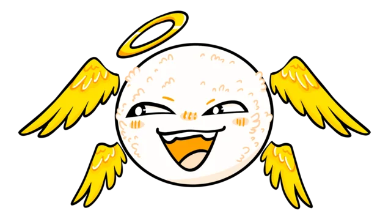

Ball is God?! Roter tårnet. Bli nedslaget.
Et hardcore arkadespill med vertikal nedstigning der du drar vannrett for å rotere tårnet rundt den fallende Espa. Hopp over trygge landinger, lad opp en combo smash og bryt gjennom en mytisk verden der ett ubeskyttet treff avslutter runden.
Aktiv produksjon: ti stedsscener, bosser, forgrenede dialoger og karmastier som endrer spillereglene.
Roterdra tårnet rundt Espa
Risikohopp over tre sikre landinger
Smashbryt gjennom plattformen
Inni den nåværende builden
Karma endrer mer enn dialogen.
Lyse, nøytrale og mørke karmastier endrer skjoldets oppførsel, varselsignalene, fiendenes aggresjon og bossenes faser, så historien endrer hvordan du spiller.
Buildstatus Aktiv produksjonAlle ti dialogverdener
Dialogbakgrunner for alle ti verdener, i nedstigningsrekkefølge fra Ena til Deka.


Gjeldende produksjonsgrensesnitt
Nivåvalg, dialog- og resultatskjermer i den nåværende builden.
Dette er den nåværende flyten i den rekkefølgen du møter den: nivåvalg, dialog, et veivalg, så seier eller en egen tapsskjerm. Hvert bilde nedenfor bruker grafikk fra Unity-produksjonsprosjektet.
Den himmelske ruten velger genererte nivåer fordelt på ti kapitler med 100 nivåer.
Produksjonsmenyen kartlegger ti steder i kapitler på 100 nivåer og åpner direkte til den valgte runden.

 201
201Dialogen foregår inne på stedet.
Figurportrettet, stedskunsten og talerskiltet deler én vertikal ramme.


Shash
Fortsett da, men tro ikke det blir lett. Trials venter på deg som vil få alt før til å virke som bare en bagatell.
04 / Milepælvalg
Svaret blir en del av nedstigningen.
På de lokale nivåene 90 og 100 ber det dedikerte panelet om et skån-eller-drep-valg før dialogen avgjør runden.

Skån
Drep
05 / Resultatmenyer
Seieren fortsetter. Nederlag går tilbake til den samme utfordringen.
Den nåværende builden har to separate resultattilstander: PanelWin tilbyr å spille igjen eller gå til neste nivå, mens PanelOver beholder én tydelig handling for å spille igjen.
Seier · PanelWin
Nedstigning fullført
 Spill igjen
Neste
Spill igjen
Neste
Spill igjen
Neste
Dialogens rollebesetning
Ansikter du møter på vei ned.
Alle de 25 figurene med gyldige åpne og lukkede portrettpar fra produksjonen er inkludert nedenfor. Hold musepekeren over eller fokuser på et kort for å bytte uttrykk.



Spilloversikt
Ball is God?! er et hardcore arkadespill om å falle gjennom et roterende tårn.
Ideen
Led Espa ned gjennom et guddommelig tårn. Én feil kan avslutte runden, og de store valgene dine endrer hvordan verden spiller.
Nåværende build
Ti stedsscener, prosedyremessig tårngenerering, combo smash, sveipeskjold, bosskonfigurasjoner, forgrenet dialog, produksjonsmenyer og uttrykksklare portretter er implementert.
Publikum
Spillere som liker harde mobile arkadespill, timing med risiko og belønning og bosser, med en historie å følge.
Status
Aktiv produksjon. Det siste arbeidet dekker kjøretidssystemer, verdenskunst, testing og hvordan spillet fungerer på en telefon.
Funksjoner
Hva du gjør i Ball is God?!
Nedstigning ved å dra for å rotere
Et vannrett drag roterer tårnet rundt den automatisk fallende Espa, og retter inn åpninger, farer og trygge plattformer.
Hardcore arkadetrykk
Ett uforsvart treff avslutter runden, så du må lese tårnet og time hvert trekk.
Bosser og mytiske verdener
Ti stedsscener, hver med sine egne bosser, fører historien fra den ene verdenen til den neste.
Valg som endrer reglene
Barmhjertighet, kraft og karma endrer dialog, skjoldregler, fiendens aggresjon, angrepssignaler og bossfaser.
Spillsløyfe
Slik spiller du Ball is God?!
- Trinn 01Les nedstigningen
Skann de neste plattformene, hullene og farene, og se etter trygge tidsvinduer mens du faller.
- Trinn 02Roter tårnet
Et vannrett drag snur verden rundt Espa og retter inn mot en trygg plattform eller en bevisst åpning.
- Trinn 03Risiko og smash
Hopp over tre plattformer for å lade en combo smash, og bryt deretter gjennom strukturer mens skjoldet dekker en dødelig feil.
- Trinn 04Velg konsekvensen
Barmhjertighet og kraft former karma, dialog og spillereglene som bæres inn i fiender og bosser.
Historie / verden
Et mytisk tårn der valgene dine følger deg ned.
Ball is God?! begynte med en fascinasjon fra barndommen for mobile arkadespill med vertikal nedstigning: å lese åpninger, reagere raskt og overleve på instinkt.
Formatet kunne bære mer: bosser, figurer med personlighet, en historie og moralsk spenning. Det nåværende prosjektet følger Espa gjennom ti stedsscener og en rolleliste med rare figurer, med valg som endrer både historien og spillet.
Så målet ble et enkelt arkadespill med vertikal nedstigning, med presset fra en bosskamp og konsekvensene fra et historiedrevet rollespill.
- Visjon
- Et arkadespill med et roterende tårn og en mytisk historie
- Nåværende verdensomfang
- Ti steder og bosskonfigurasjoner
- Historiestadium
- Komplett historieutkast i lang form
- Produksjonsstatus
- Aktiv produksjon
Oversikt
Enkle dra-kontroller, med en historie som endrer reglene.
Dra-for-å-rotere-kontrollene er umiddelbare. Resten kommer fra mytiske verdener, bosser og valg som endrer spillet.
Den nåværende builden kombinerer allerede deterministisk tårngenerering, smashing med risiko og belønning, feil etter ett treff, bosser, forgrenede dialoger og karma som endrer spillopplevelsen.
- Sjanger
- Historiedrevet arkade med vertikal nedstigning
- Plattformmål
- iOS / Android
- Sesjonsform
- Raske ferdighetsbaserte runder
- Studio
- WillowinWorlds
Last ned ressurser
Ball is God?! presse- og skaperressurser
WebP-forhåndsvisninger for pressedekning, utgivervurdering og referanser til butikksider. Kildefiler i full oppløsning er tilgjengelige på forespørsel.
Merkevare og karakterer
Spillikonet pluss alle 25 nåværende karakterer som har komplette produksjonsdialogportretter. Navnene samsvarer med Unity-lokaliseringsnøklene.
RevlaProduksjonsdialogportrett.
ShashProduksjonsdialogportrett.
ShushProduksjonsdialogportrett.
ShishProduksjonsdialogportrett.
GigoProduksjonsdialogportrett.
GogaProduksjonsdialogportrett.
GigaProduksjonsdialogportrett.
AskoldProduksjonsdialogportrett.
MirasProduksjonsdialogportrett.
HihProduksjonsdialogportrett.
HehProduksjonsdialogportrett.
HahProduksjonsdialogportrett.
MusyaProduksjonsdialogportrett.
DusyaProduksjonsdialogportrett.
SusyaProduksjonsdialogportrett.
VladusProduksjonsdialogportrett.
FrishaProduksjonsdialogportrett.
LurenProduksjonsdialogportrett.
KurenProduksjonsdialogportrett.
Don YagonProduksjonsdialogportrett.
LuryaProduksjonsdialogportrett.
KhleyaProduksjonsdialogportrett.
VaronProduksjonsdialogportrett.
WhiteProduksjonsdialogportrett.
Menybakgrunner
Nåværende produksjonsgrafikk brukt av det himmelske nivåvalgsystemet.
 Himmelsk meny
Himmelsk meny
Verdener med vertikal nedstigning
Komplett sett med ti gjeldende stedsbakgrunner, ordnet fra Ena til Deka.
 01 · HimmelverdenEna vertikal nedstigningsbakgrunn.
01 · HimmelverdenEna vertikal nedstigningsbakgrunn.
 02 · RomverdenDyo vertikal nedstigningsbakgrunn.
02 · RomverdenDyo vertikal nedstigningsbakgrunn.
 03 · StormverdenTria vertikal nedstigningsbakgrunn.
03 · StormverdenTria vertikal nedstigningsbakgrunn.
 04 · SnøverdenTessera vertikal nedstigningsbakgrunn.
04 · SnøverdenTessera vertikal nedstigningsbakgrunn.
 05 · VulkanverdenPente bakgrunn; animert i spillet.
05 · VulkanverdenPente bakgrunn; animert i spillet.
 06 · HavverdenEksi vertikal nedstigningsbakgrunn.
06 · HavverdenEksi vertikal nedstigningsbakgrunn.
 07 · ØrkenverdenEpta vertikal nedstigningsbakgrunn.
07 · ØrkenverdenEpta vertikal nedstigningsbakgrunn.
 08 · SkogverdenOhto vertikal nedstigningsbakgrunn.
08 · SkogverdenOhto vertikal nedstigningsbakgrunn.
 09 · HuleverdenEnnea vertikal nedstigningsbakgrunn.
09 · HuleverdenEnnea vertikal nedstigningsbakgrunn.
 10 · HelvetesverdenDeka vertikal nedstigningsbakgrunn.
10 · HelvetesverdenDeka vertikal nedstigningsbakgrunn.
Bakgrunn for historiearkade
Komplett sett med dialogsteder: Hall of Light pluss bakgrunner for alle ti verdener.
 00 · Hall of LightÅpningsdialogbakgrunn.
00 · Hall of LightÅpningsdialogbakgrunn.
 01 · HimmeldialogEna historiebakgrunn.
01 · HimmeldialogEna historiebakgrunn.
 02 · RomdialogDyo historiebakgrunn.
02 · RomdialogDyo historiebakgrunn.
 03 · StormdialogTria historiebakgrunn.
03 · StormdialogTria historiebakgrunn.
 04 · SnødialogTessera historiebakgrunn.
04 · SnødialogTessera historiebakgrunn.
 05 · VulkandialogPente historiebakgrunn.
05 · VulkandialogPente historiebakgrunn.
 06 · HavdialogEksi historiebakgrunn.
06 · HavdialogEksi historiebakgrunn.
 07 · ØrkendialogEpta historiebakgrunn.
07 · ØrkendialogEpta historiebakgrunn.
 08 · SkogdialogOhto historiebakgrunn.
08 · SkogdialogOhto historiebakgrunn.
 09 · HuledialogEnnea historiebakgrunn.
09 · HuledialogEnnea historiebakgrunn.
 10 · HelvetesdialogDeka historiebakgrunn.
10 · HelvetesdialogDeka historiebakgrunn.
Ball is God?! FAQ
Vanlige spørsmål om Ball is God?!
Hva slags spill er Ball is God?!
Et hardcore arkadespill med vertikal nedstigning. Du roterer et tårn rundt den fallende Espa, hopper over trygge landinger for å lade opp smashes og bryter gjennom mytiske verdener.
Hvordan spiller man Ball is God?!
Dra horisontalt for å rotere tårnet, hopp over tre plattformer for å lade en smash, og sveip vertikalt når nedkjølingsskjoldet må absorbere et dødelig treff.
Er Ball is God?! ute ennå?
Ikke ennå. Det er i aktiv produksjon, med arbeid på kjøretidssystemer, verdenskunst, historieinnhold og testing. Det finnes ingen offentlig utgivelsesdato. Målplattformene er iOS og Android.
Hva gjør Ball is God?! annerledes?
Det blander arkadepress med risiko og belønning med ti steder og karma som endrer dialog, fiender, varselsignaler, skjold og bosser.
Hvem lager Ball is God?!
WillowinWorlds, et uavhengig studio som lager mobile puslespill og arkadespill.
Kan jeg bruke presseressursene til Ball is God?!
Ja, for presse, utgivervurdering og butikkreferanser. Kildefiler forblir private med mindre du ber oss om dem.
Ball is God?! Devlog
Hva endret seg og når
- Verdensoverflater og farevalidering
Figurpresentasjon, deterministisk generering og tornefarer fikk en kombinert visuell gjennomgang og validering.
- juli 2026Produksjons-UI og karaktergjennomgang
Nivåvalg, delte handlingskontroller, vertikal dialogramming og parede figuruttrykk er nå på plass.
- februar 2026Gjennomgang av prosjektomfang
Teamet fullførte en stor gjennomgang av historieintegrasjonen og gikk gjennom hele prosjektets skala: ti verdener, moralske valg, bosser og flere avslutninger.
- april-mai 2025Historieomskriving og evner
Hele historien ble skrevet om, karakterevner ble forbedret og moralske konsekvenser ble tydeligere.
- august 2024Historieretning begynner
Teamet bestemte at Ball is God?! skulle være mer enn en enkel arkadenedstigning, og la til en mytisk historie og en visjon om moralske valg.
- juli 2024Originalt konsept
Prosjektet begynte som studioets første spillidé: et raskt vertikalt arkadespill om å falle gjennom et guddommelig tårn.
- Nåværende buildArkade og historie i én build
Nedstigning gjennom det roterende tårnet, combo smash, sveipeskjold, bosser, dialog og karma fungerer nå sammen i én build.